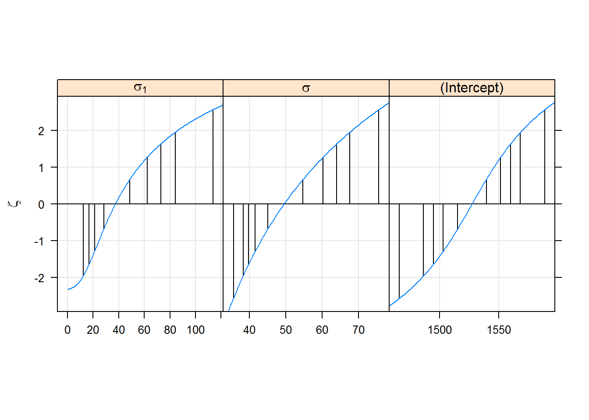
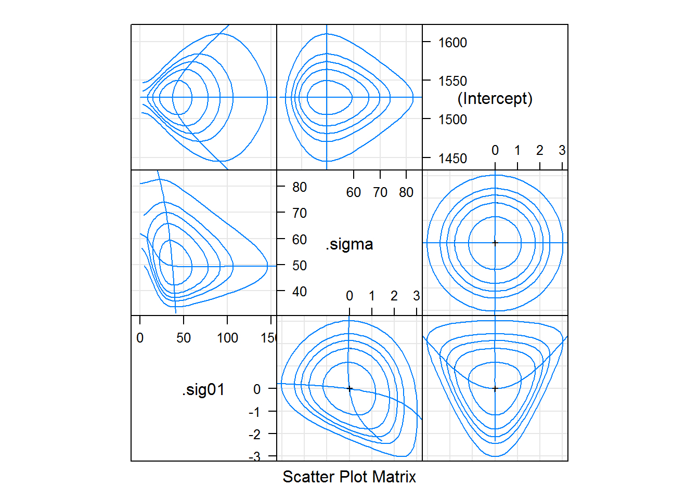

We are exploring a simple example of a mixed-effect model; the linear mixed model. We are using the lmer function in the lme4 package to fit and analyze our model. We will also use the lattice package. We are using a Dyestuff data set from the Book “Statistical Methods in Research and Production” by Davies and Goldsmith, which characterizes the variability in chemical processes between batches.
###Example:
library(lme4)## Loading required package: Matrixlibrary(lattice)
str(Dyestuff) # structure of the data## 'data.frame': 30 obs. of 2 variables:
## $ Batch: Factor w/ 6 levels "A","B","C","D",..: 1 1 1 1 1 2 2 2 2 2 ...
## $ Yield: num 1545 1440 1440 1520 1580 ...head(Dyestuff)## Batch Yield
## 1 A 1545
## 2 A 1440
## 3 A 1440
## 4 A 1520
## 5 A 1580
## 6 B 1540summary(Dyestuff) # creat a summary of the data## Batch Yield
## A:5 Min. :1440
## B:5 1st Qu.:1469
## C:5 Median :1530
## D:5 Mean :1528
## E:5 3rd Qu.:1575
## F:5 Max. :1635### fit a model to the Dyestuff data allowing for an overall level of the Yield and for an additive random effect for each level of Batch
fm1 <- lmer(Yield ~ 1 + (1|Batch), Dyestuff) #linear mixed model fit by REML
print(fm1)## Linear mixed model fit by REML ['lmerMod']
## Formula: Yield ~ 1 + (1 | Batch)
## Data: Dyestuff
## REML criterion at convergence: 319.6543
## Random effects:
## Groups Name Std.Dev.
## Batch (Intercept) 42.00
## Residual 49.51
## Number of obs: 30, groups: Batch, 6
## Fixed Effects:
## (Intercept)
## 1528(fm1ML <- lmer(Yield ~ 1 + (1|Batch), Dyestuff, REML = FALSE)) ### linear mixed model fit by maximum likelihood## Linear mixed model fit by maximum likelihood ['lmerMod']
## Formula: Yield ~ 1 + (1 | Batch)
## Data: Dyestuff
## AIC BIC logLik deviance df.resid
## 333.3271 337.5307 -163.6635 327.3271 27
## Random effects:
## Groups Name Std.Dev.
## Batch (Intercept) 37.26
## Residual 49.51
## Number of obs: 30, groups: Batch, 6
## Fixed Effects:
## (Intercept)
## 1527(fm1ML <- update(fm1, REML = FALSE))# fitting similar model ## Linear mixed model fit by maximum likelihood ['lmerMod']
## Formula: Yield ~ 1 + (1 | Batch)
## Data: Dyestuff
## AIC BIC logLik deviance df.resid
## 333.3271 337.5307 -163.6635 327.3271 27
## Random effects:
## Groups Name Std.Dev.
## Batch (Intercept) 37.26
## Residual 49.51
## Number of obs: 30, groups: Batch, 6
## Fixed Effects:
## (Intercept)
## 1527summary(fm1a<-lm(Yield~1,Dyestuff)) # ##
## Call:
## lm(formula = Yield ~ 1, data = Dyestuff)
##
## Residuals:
## Min 1Q Median 3Q Max
## -87.50 -58.75 2.50 47.50 107.50
##
## Coefficients:
## Estimate Std. Error t value Pr(>|t|)
## (Intercept) 1527.50 11.51 132.8 <2e-16 ***
## ---
## Signif. codes: 0 '***' 0.001 '**' 0.01 '*' 0.05 '.' 0.1 ' ' 1
##
## Residual standard error: 63.02 on 29 degrees of freedomlm(formula=Yield~1,data=Dyestuff) # to reiterate, the model fm1 corresponds to the linear model##
## Call:
## lm(formula = Yield ~ 1, data = Dyestuff)
##
## Coefficients:
## (Intercept)
## 1527fm1ML <- lmer(Yield ~ 1|Batch, Dyestuff, REML = FALSE, verbose = TRUE) # further assess the fit of the model by matrices and vectors## start par. = 0.9787605 fn = 327.7027
## At return
## eval: 18 fn: 327.32706 par: 0.752581 pr1<-profile(fm1ML) # profile fuction varying the parameters in a model## start par. = 49.5101 fn = 327.3277
## At return
## eval: 14 fn: 327.32770 par: 49.4872
## start par. = 49.48721 fn = 327.3983
## At return
## eval: 16 fn: 327.39765 par: 49.3128
## start par. = 49.31277 fn = 327.7334
## At return
## eval: 14 fn: 327.73295 par: 49.1653
## start par. = 49.16527 fn = 328.3147
## At return
## eval: 15 fn: 328.31463 par: 49.1189
## start par. = 49.11889 fn = 329.1383
## At return
## eval: 12 fn: 329.13834 par: 49.1298
## start par. = 49.12978 fn = 330.194
## At return
## eval: 13 fn: 330.19392 par: 49.1718
## start par. = 49.17182 fn = 331.473
## At return
## eval: 16 fn: 331.47292 par: 49.2275
## start par. = 49.22745 fn = 332.9673
## At return
## eval: 14 fn: 332.96727 par: 49.2854
## start par. = 49.28537 fn = 334.6694
## At return
## eval: 15 fn: 334.66933 par: 49.3388
## start par. = 49.33883 fn = 336.5719
## At return
## eval: 14 fn: 336.57187 par: 49.3844
## start par. = 49.38444 fn = 338.6681
## At return
## eval: 15 fn: 338.66809 par: 49.4211
## start par. = 49.42108 fn = 340.9516
## At return
## eval: 15 fn: 340.95158 par: 49.4491
## start par. = 49.5101 fn = 327.3993
## At return
## eval: 16 fn: 327.39752 par: 49.8142
## start par. = 49.81421 fn = 327.8795
## At return
## eval: 13 fn: 327.86376 par: 50.7256
## start par. = 50.72559 fn = 328.7821
## At return
## eval: 16 fn: 328.73668 par: 52.3215
## start par. = 52.32145 fn = 329.9785
## At return
## eval: 20 fn: 329.88256 par: 54.6997
## start par. = 54.69972 fn = 331.2918
## At return
## eval: 16 fn: 331.14029 par: 57.7135
## start par. = 57.71355 fn = 332.4409
## At return
## eval: 16 fn: 332.28660 par: 60.7429
## start par. = 60.74295 fn = 332.754
## At return
## eval: 13 fn: 332.72989 par: 61.9644
## start par. = 37.26035 fn = 327.3319
## At return
## eval: 15 fn: 327.33178 par: 37.1279
## start par. = 37.12788 fn = 327.5477
## At return
## eval: 16 fn: 327.54450 par: 36.2761
## start par. = 36.27612 fn = 328.0507
## At return
## eval: 15 fn: 328.04675 par: 35.2950
## start par. = 35.295 fn = 328.8454
## At return
## eval: 19 fn: 328.83998 par: 34.1111
## start par. = 34.11111 fn = 329.9285
## At return
## eval: 17 fn: 329.92109 par: 32.6666
## start par. = 32.66663 fn = 331.2979
## At return
## eval: 17 fn: 331.28767 par: 30.8755
## start par. = 30.87545 fn = 332.9513
## At return
## eval: 17 fn: 332.93714 par: 28.6059## Warning in optwrap(optimizer, par = start, fn = function(x)
## dd(mkpar(npar1, : convergence code 3 from bobyqa: bobyqa -- a trust region
## step failed to reduce q## start par. = 28.60591 fn = 334.8866
## At return
## eval: 15 fn: 334.86688 par: 25.6381
## start par. = 25.63805 fn = 337.102
## At return
## eval: 19 fn: 337.07420 par: 21.5463
## start par. = 21.5463 fn = 339.5958
## At return
## eval: 22 fn: 339.55636 par: 15.2104
## start par. = 37.26035 fn = 327.5303
## At return
## eval: 17 fn: 327.52734 par: 38.0338
## start par. = 38.03385 fn = 328.1681
## At return
## eval: 14 fn: 328.16579 par: 38.7041
## start par. = 38.70406 fn = 329.2428
## At return
## eval: 15 fn: 329.24110 par: 39.2615
## start par. = 39.26146 fn = 330.7484
## At return
## eval: 16 fn: 330.74718 par: 39.7282## Warning in optwrap(optimizer, par = start, fn = function(x)
## dd(mkpar(npar1, : convergence code 3 from bobyqa: bobyqa -- a trust region
## step failed to reduce q## start par. = 39.72824 fn = 332.6801
## At return
## eval: 15 fn: 332.67921 par: 40.1225## Warning in optwrap(optimizer, par = start, fn = function(x)
## dd(mkpar(npar1, : convergence code 3 from bobyqa: bobyqa -- a trust region
## step failed to reduce q## start par. = 40.12254 fn = 335.0335
## At return
## eval: 15 fn: 335.03290 par: 40.4583
## start par. = 40.45828 fn = 337.8048
## At return
## eval: 12 fn: 337.80435 par: 40.7462
## start par. = 40.74622 fn = 340.9903
## At return
## eval: 12 fn: 340.98999 par: 40.9948 xyplot(pr1,aspect=1.3) # creat profile zeta plot
confint(pr1,level=0.99) # constructing confidence interval## 0.5 % 99.5 %
## .sig01 0.00000 113.68769
## .sigma 35.56317 75.66803
## (Intercept) 1465.87401 1589.12602 # Add absVal=TRUE to your xyplot to visualize the confidene intervals.
#basically we do xyplot to look at the sensitivity of the model fit to changes in the value of the particular parameters.
# the ideal profile zeta plot will have a straight line in the region we are interested in,becasue the statistical influence will be more reliable.
# the pattern of the profile plot is sigmoidal.
splom(pr1) # Another way to look the model fit is to create a profile pairs plots, this not only tells about the sensitivity of the model fit to changes in parameters , it also tells us how the parameters influence each other.
# the contours corresponds to the confidence regions at particular confidence levels.
# top 3 panesl on left represent the original parameters and the panels on the bottom right represent the parameters that have changed. So the contour lines are marginal confidence regions based on the likelihood ratio"50%,80%,90%,95% and 99%"Exercise: Step1:Repeat the same process for the “Dyestuff2” data. Observe the str and the summary. Step2: Fit a model with yield as the response variable and batch as the random effect. Use REML (restricted maximum likelihood) criterion to create a dotplot of the conditional modes of the random effect. Step3: Re-fit the model using max likelihood. Step4: Profile the fitted model and construct 95% profile based confidence intervals on the parameter and also create profile paris plots.